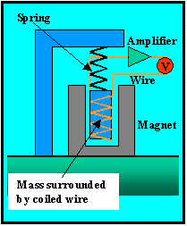
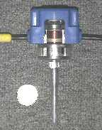
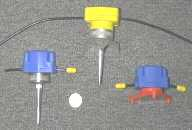

Geophones
 Contrary to what you might think, geophones are remarkably simple (yet ingenious) devices. Like gravity meters, the active element of the device consists of a mass hanging on a spring. When the ground moves, the mass (because it has inertia) wants to remain motionless. If you were watching the seismometer as the ground moved, it would look like the mass itself was moving. But, in reality, you are moving with the ground, and the mass is remaining motionless*.
Now for the part that I really consider ingeneous. Wrapped around the mass is a strand of wire. Surrounding the wire-wrapped mass is a magnet that is fixed to the Earth. As the Earth moves, the magnet moves up and down around the mass. The magnetic field of this moving magnet produces an electrical voltage in the wire. This voltage can be amplified and recorded by a simple voltmeter. It is relatively easy to show that the voltage recorded by the voltmeter is proportional to the velocity (speed) at which the ground is moving**.
 Shown to the right is an example of a geophone that is representative of those typically used in seismic refraction and reflection work. A quarter is shown for scale. This particular seismometer has had its side cut out so that you can see its working parts. The wire- (copper wire in this case) wrapped mass can be clearly seen inside the geophone. The spring connecting the geophone to the case can not be seen but is just above the mass. The silver colored case just inside the blue plastic external case is magnetized. The black wires coming out from either side of the blue case transmit the variations in voltage to the recording system. The long silver spike below the blue case is used to firmly attach the geophone to the ground. This spike is pressed into the ground by stepping on the top of the geophone until it is completely buried.
 Different styles of geophone cases are available for use in different environments. Several examples are shown to the right. The geophone shown to the far right (the one without the spike), for example, is designed for use on hard surfaces into which spikes can not be pushed.
Geophones used in exploration seismology are relatively inexpensive. Costs ranging from $75 to $150 per geophone are not uncommon. Although this cost per geophone is small, remember that many (1000's) of geophones may be used in the large reflection seismic surveys conducted for the petroleum industry. Near-surface investigations are typically much smaller in scale, both in terms of area covered and in terms of equipment needed. For a near-surface refraction survey, one could use as few as twelve or as many as a hundred geophones. Near-surface reflection surveys use only a moderately greater (24 to 150) amount of geophones at any one time.
*Obviously, this is a simplification of what really happens. Because the spring is not perfectly compliant, the mass does in fact move when the Earth moves. It moves in a very complex fashion that can be relatively easily quantified. For our purposes, however, we can make the assumption that the mass remains motionless without loss of generalization.
**This type of geophone was first invented in 1906 by a prince of the Russian empire by the name of B. B. Galitizin.
Seismology
- Simple Earth Model: Low-Velocity Layer Over a Halfspacepg 11
- Head Wavespg 12
- Records of Ground Motionpg 13
- Travel-time Curves for a Simple Earth Modelpg 14
- First Arrivalspg 15
- Determining Earth Structure from Travel Timespg 16
- Derivation of Travel Time Equationspg 17
- High-Velocity Layer Over a Halfspace: Reprisepg 18
- Picking Times of Arrivalspg 25
- Wave Propagation with Multiple Horizontal Layerspg 26
- Travel Time Curves from Multiple Horizontalpg 27
- Hidden Layerspg 28
- Head Waves from a Dipping Layer: Shooting Down Dippg 29
- Head Waves from a Dipping Layer: Shooting Up Dippg 30
- A Field Procedure for Recognizing Dipping Bedspg 31
- Estimating Dips and Depths from Travelpg 32